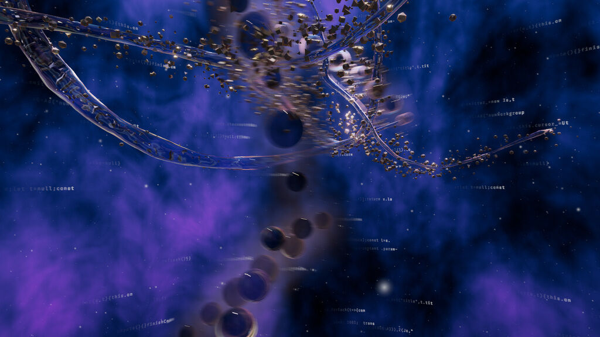

What is Cosmosapience?
Memo Akten & Katie Hofstadter: | The Thinking Ocean | 2026
Cosmosapience is a project, art series, and laboratory founded by the California-based artists and researchers Memo Akten and Katie Hofstadter. Operating alongside their collaborative SUPERRADIANCE Center for Entangled Intelligence, the project investigates the relationships of artificial intelligence, planetary consciousness, embodiment, and complex ecological systems. By blending experience, human interaction, and the visualization of real scientific data pretaining to AI; one can vividly feel the similarity between what is data and what is organic.

In a recent work, the two explored the concept of consciousness through the lens of artificial intelligence in the visualization of matter floating within the ocean, drifting along. What's depicted isn't just random blobs of shape but actually highly complex and intricate data. Constantly flowing, and changing shape between what can be seen. This dynamic represents an underlying message: that the logic of nature and the logic of data- is not very different at all.